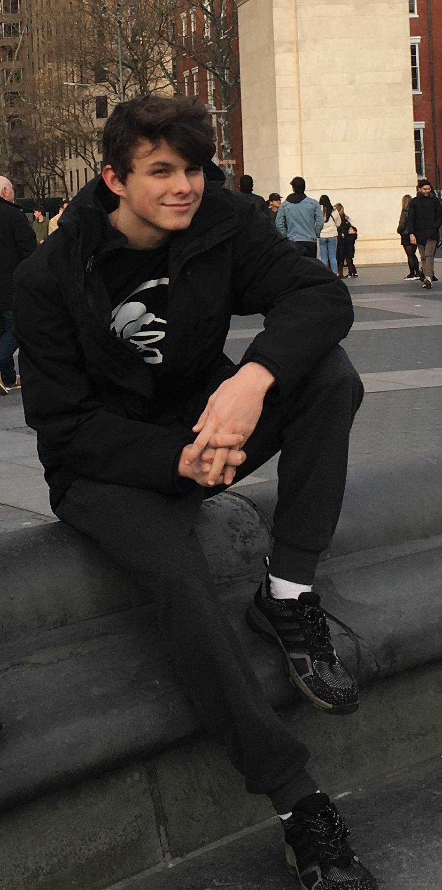
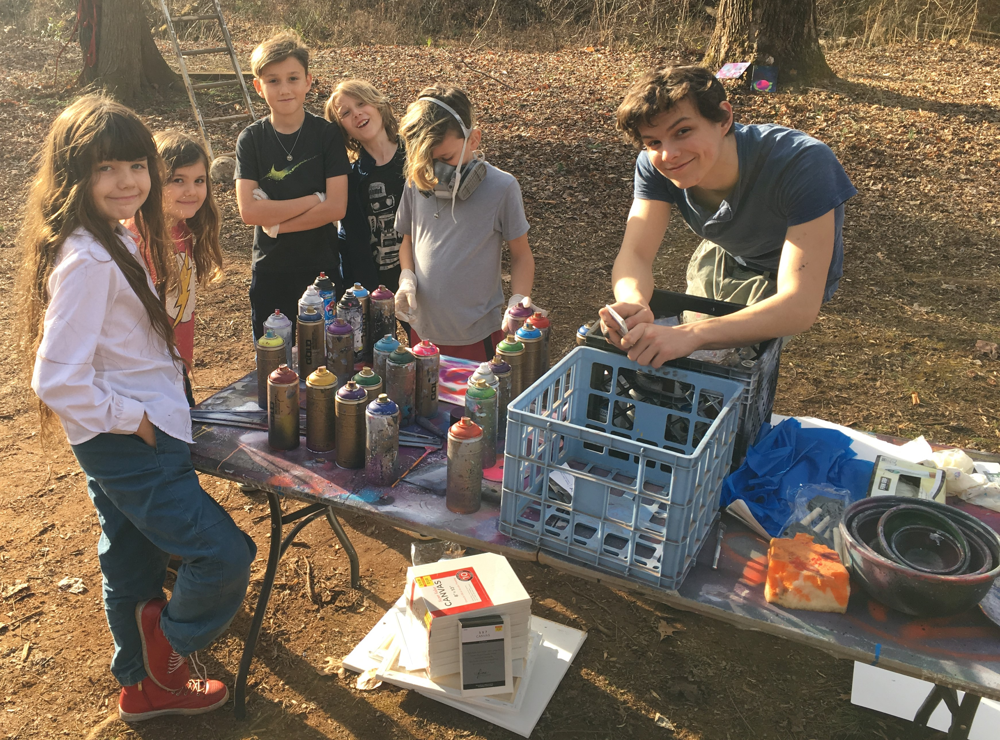
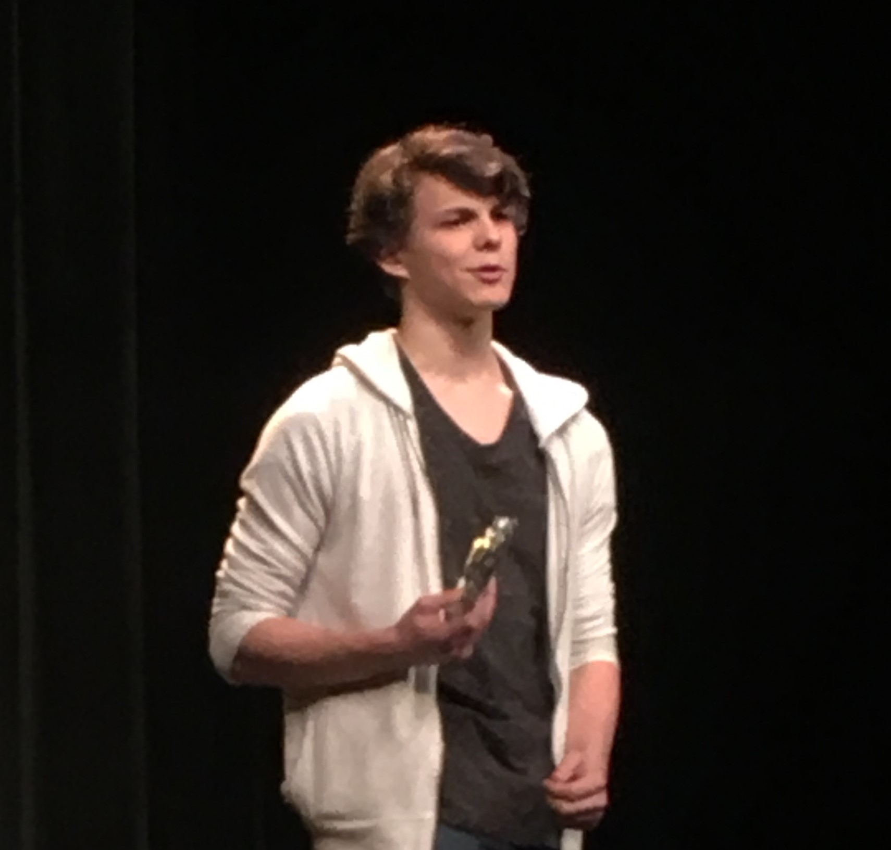

   Yaseen von Briesen is a young aspiring artist living in the Queen City in North Carolina. He's been developing his spray paint work and has expanded to murals, series, and complilations. He is interested in social work as a career, but alongside that is pursuing physical fitness, and AA degree at Central Piedmont Community College, and generally paying the bills.
Designed by Funky Munky Enteprises, April 2020